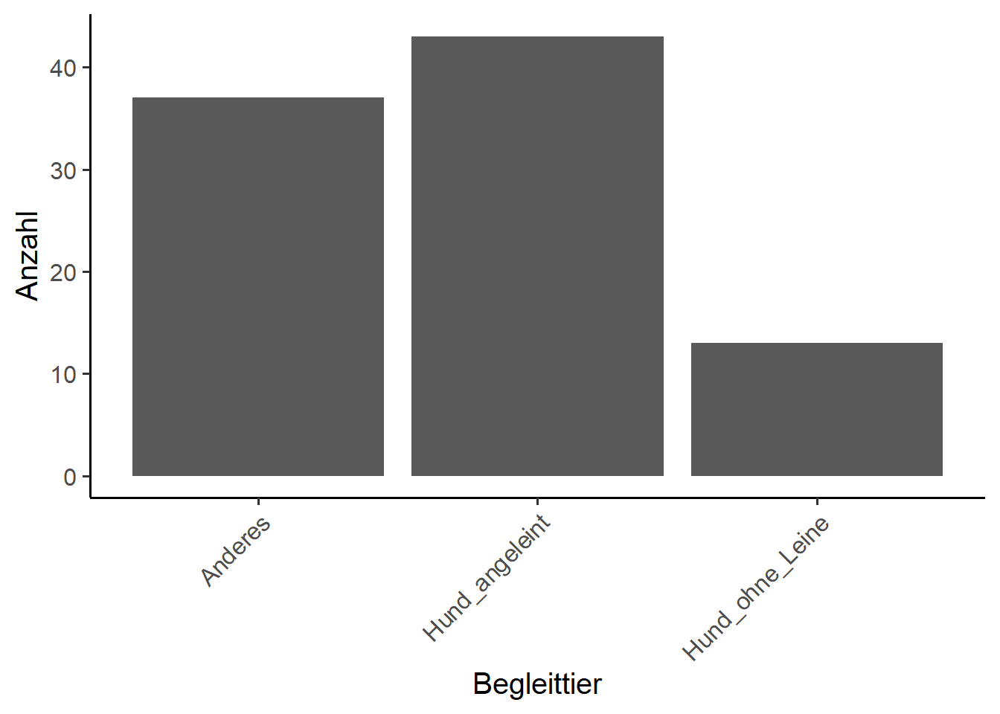
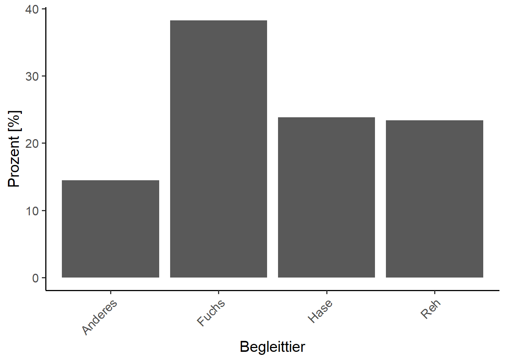

KW40+KW42 - Felderhebung Grüntal - Übung
Biodiversity & Ecosystems (S)
Einführung und Installation
Es gibt eine Vielzahl an möglichen Methoden zur Erfassung der Besucherzahlen. Automatische Zählgeräte bieten die Möglichkeit lange und durchgehende Zeitreihen zu erfassen. Diese müssen aber natürlich auch ausgewertet werden. Hier erhaltet ihr erste Inputs dazu.
Ziele
- Die Studierenden können das eingesetzte Gerät installieren und kennen die Vor- und Nachteile verschiedener Methoden.
- Sie können die Daten auslesen und explorativ analysieren.
Grundlagen
Die Geräte werden innerhalb der auf Abbildung 1 gekennzeichneten Standorte platziert. Damit soll überprüft werden, wie stark frequentiert die Waldränder der ökologisch aufgewerteten Seeparzelle sind.

Datenschutz ist ein wichtiges Thema. Die Besuchenden werden über den Zweck der Kameras informiert, die Daten nach der Bearbeitung wieder gelöscht und nicht weitergegeben.

Nun geht es ins Feld uns die Geräte werden installiert.
Auswertung
AUFGABE ab dem 12.10.2021
Nachdem die Kameras für zwei Wochen im Einsatz standen, werden die Daten ausgelesen, die Sichtungen in Excel festgehalten und die explorativen Analysen durchgeführt.
Bereits beim Detektieren der Sichtungen muss einem klar sein, was man auswerten möchte. Nur so können die relevanten Variablen erfasst werden.
Im Rahmen dieser Felderhebung erhaltet ihr von Adrian eine Excel-Vorlage zur Verifizeriung der automatisch detektierten Sichtungen.
Verifiziert kurz, was euch der Algorithmus geliefert hat.
Als nächstes geht es ins R. Da wir für unsere Auswertungen zu wenige Sichtungen haben, verwendet bitte den Datensatz DummyData (ReMe HS21 MSc ENR_/Fallstudie Biodiversity & Ecosystems/S_Daten/Felderhebungen). Eure Verifizierung braucht ihr nicht mehr.
Datenanalyse in R
Vorbereitungen
Fuer diese Aufgabe benoetigen wir folgende Bibliotheken:
# Benoetigte Bibliotheken ####
library(tidyverse) # Data wrangling und piping
library(lubridate) # Arbeiten mit Datumsformaten
library(data.table)# schnelles DateneinlesenLese nun zuerst den bereitsgestellen, respektiven den selbst erstellten Datensatz (csv) mithilfe von fread() oder read.csv() ein und nennt ihn cam.
Pruefe die Daten. Wurden sie richtig eingelesen? Wie sieht die Struktur der Daten aus?
Tipp: Brauch zum pruefen den Befehl str() sowie head().
Aufgabe 1: Datentypen
Viele Befehle zum Einlesen erkennen die Datentypen automatisch. Bei Faktoren funktioniert das aber nicht (sie sind ja eigentlich einfach Text und R weiss nicht, was wir damit wollen).
Auch das Datum muss vielfach manuell definiert werden (hier muessen wir R sagen, wie das Format dieses aussieht).
cam <- cam %>%
mutate(Datum = as.Date(Datum, format = "%d.%m.%Y"))%>%
mutate(Kamerastandort = factor(Kamerastandort))%>%
...Definiert nun die restlichen (relevanten) Variablen als Faktor.
Aufgabe 2: Datensatz trennen
Unser Datensatz enthaellt die Angeben zu ost und west. Wir wollen die Auswertungen aber pro Standort machen.
Trennt den Datensatz aufgrund des Standorts. Nutzt dazu filter().
ost <- filter(DATENSATZ, SPALTENNAME == "Attribut")
west <- ...Aufgabe 3: Verteilung pruefen
Bei explorativen Analysen macht es immer Sinn sich die Verteilung der Daten anzuschauen. Pruefe daher die Verteilung pro Datensatz mittels Histogram und Scatterplot.
Beim Histogram sollen nur die Menschen angezeigt und die 0er ausgeschlossen werden. Das kann mit folgendem Code erreicht werden:
hist(west$Anzahl[west$Art=="Mensch" &
!west$Anzahl==0], # das "!" bedeutet "nicht gleich"
breaks = 10) # wie viele Balken brauchen wir im Histogram?Beim Scatterplot soll auf der x-Achse das Datum stehen, auf der y-Achse die Anzahl der Personen. Auch hier wollen wir keine Wildtiere im Plot.
Aufgabe 3: Daten ausschliessen
Fuer die weiteren Analysen schliessen wir die Wildtiere komplett aus.
- Nutzt dazu wiederum den Befehl filter() und ueberschreibt die Datensaetze ost und west.
Dennoch wolle wir auch wissen, welche Tiere auf dem Areal (ost und west zusammen, also df cam) unterwegs sind.
- Dafuer gibts einen separaten Datensatz namens Tiere. Nutzt dazu den Befehl filter().
Aufgabe 4: Explorative Analysen
Berechnet zuerst die totale Anzahl Menschen / Standort mit sum(DATENSATZ$SPALTENNAME).
Gruppieren und summieren:
Berechnet nun die Anzahl Menschen pro Aktivität und Standort (= Akt_ost und Akt_west).
Berechnet auch die Anzahl Begleittier pro Kategorie und Standort (= Begleittier_ost und Begleittier_west).
Untenstehender Code eigent sich dazu ganz gut:
Akt_ost <- ost %>%
group_by(Aktivitaet)%>% # Hier sagen wir nach was wir gruppieren
summarise (n = sum(Anzahl)) %>% # und dann sagen wir, dass R zusammenfassen soll und zwar die Anzahl
mutate(freq = n / sum(n))%>% # und dann soll und R das prozentuale Verhaeltniss berechnen
arrange(desc(n)) # und dann das ganze absteigend sortierenNun soll noch berechnet werden, wie viele unterschiedliche Wildtiere auf dem ganzen Areal gezaehlt wurden.
Recycelt dazu obenstenenden Code.
Aufgabe 5: Visualisieren
Verteilung der Aktivitäten als Pie Chart
Zuerst eine Palette mit 5 Farben definieren:
pal <- hcl.colors(5, palette = "heat")Dann als Kreisdiagramm plotten.
pie(Akt_west$n, labels = c("Anderes", "Biker", "Landwirtschaft", "Spaziergaenger", "unbestimmbar"),
main = "Prozentuales Verhaeltnis West",
col = pal) 
Hinweis: Die labels im base R plot müssen manuell definiert werden. ggplot als Alternative macht das selbst.
- FRAGE: eignen sich Pie Charts überhaupt für solche Darstellungen? Wie könnten die Aktivitäten auch noch dargestellt werden? Welches sind eure eigenen Ideen zur Visualisierung?
Begleittier als Bar Chart
# Begleittier als Bar Chart ####
ggplot(Begleit_ost, # hier den Datensatz spezifizieren
mapping=aes(x=Begleittier, y = n))+ # Absolute Anzahl darstellen
geom_col(width=0.9,position = "dodge")+# hier sage ich, dass ich ein Balkendiagramm will
labs(x="Begleittier", y= "Anzahl")+ # Achsenbeschriftung setzen
theme_classic(base_size = 15)+ # Und zu guter letzt: Stil definieren
theme(axis.text.x = element_text(angle = 45, vjust = 1, hjust=1)) # sowie Achsenbeschr.ausrichten
Und schliesslich: Wildtier als Bar Chart Stellt hier auf der y-Achse die Anzahl nicht total sondern relativ (in Prozent) dar.

Bei Bedraf koennen die selben Plots fuer den zweiten Standort gemacht werden.